Bienvenue Sur Medical Education
Traumatisme rachidien
Spécialité : traumatologie /
Points importants
-
Les signes cliniques d'une lésion vertébrale se limitent à une douleur localisée et à une contracture musculaire non spécifiques
-
Le diagnostic d'une lésion vertébrale est donc radiologique
-
Schématiquement, deux tableaux différents :
-
traumatisme grave pris en charge dès le pré-hospitalier : patient porteur d'un traumatisme du rachis jusqu'à preuve radiologique du contraire
-
mono-traumatisé, en particulier traumatisme cervical, consultant au SAU :
-
connaître les indications et les incidences des radiographies rachidiennes
-
s'assurer de la qualité des radiographies et de leur interprétation par un radiologue senior
-
On distingue 3 groupes lésionnels :
-
lésions disco-ligamentaires
-
lésions disco-corporéales
-
lésions mixtes
-
Toujours suspecter un traumatisme médullaire
-
Score ASIA horodaté (tonus anal +++)
-
Lutter contre les agressions médullaires d'origine systémique
-
Pas de corticoïdes
-
Attention aux autres lésions
-
Chirurgie précoce, malgré l'absence de preuve scientifique si pas de contre-indication
-
3 à 25% des lésions médullaires se constituent pendant le transport ou dans la phase hospitalière initiale
Présentation clinique / CIMU
CONTEXTE
-
Souvent trauma isolé et cervical
-
Accident de cinétique violente :
-
tout traumatisme violent (AVP, chute, rixe...)
-
accident de sport (mécanisme : hyper-extension, hyper-flexion) : ski, surf, rugby, gymnastique, plongeon en eau peu profonde
-
Plaie pénétrante cervicale ou dorsale
EXAMEN CLINIQUE
- traumatisme grave pris en charge dès le pré-hospitalier : patient porteur d'un traumatisme du rachis jusqu'à preuve radiologique du contraire
-
mono-traumatisé, en particulier traumatisme cervical, consultant au SAU :
- connaître les indications et les incidences des radiographies rachidiennes
- s'assurer de la qualité des radiographies et de leur interprétation par un radiologue senior
- lésions disco-ligamentaires
- lésions disco-corporéales
- lésions mixtes
Présentation clinique / CIMU
CONTEXTE
- Souvent trauma isolé et cervical
-
Accident de cinétique violente :
- tout traumatisme violent (AVP, chute, rixe...)
- accident de sport (mécanisme : hyper-extension, hyper-flexion) : ski, surf, rugby, gymnastique, plongeon en eau peu profonde
- Plaie pénétrante cervicale ou dorsale
EXAMEN CLINIQUE
Evaluation neurologique
- Etat de conscience (tout traumatisé grave avec des troubles de conscience présente une lésion instable du rachis jusqu'à preuve du contraire (jusqu'à 30 % de lésions du rachis cervical)
- Il doit être simple, clair et permettre une évaluation du niveau métamérique lésionnel afin d'établir la notion de lésion médullaire complète ou incomplète
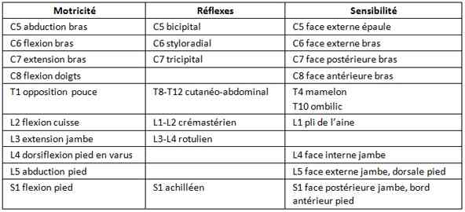 _361 Tableau Signes neurologiques chez un traumatisé rachidien
- Affirmer la blessure de la moelle épinière, par l'absence de déficit neurologique sur les nerfs crâniens, (l'examen du visage, la mobilité de la face et l'oculomotricité sont normales), et éliminer ainsi une étiologie intracrânienne
- Faire un examen des muscles test des membres supérieurs et des membres inférieurs, selon les racines du plexus brachial (C5 à T1) et les racines du plexus lombo-sacré (L2 à S1)
- Faire un examen de la sensibilité cutanée objective (pique-touche), sur les membres et le tronc et le reporter sur une carte du schéma corporel
- Faire un examen des ROT
- Faire un examen du périnée, pour la sensibilité cutanée, le tonus et la contraction volontaire et réflexe du sphincter anal, (toucher rectal et réflexe anal)
- Le tout aboutit à un score ASIA, qui évalue le degré de lésion neurologique initiale
-
On en déduit :
- une blessure médullaire complète, qui n'a pas de motricité, ni sensibilité, ni réflexes au-dessous du niveau lésionnel, (soit une paraplégie, soit une tétraplégie)
- attention : un blessé qui ne bouge pas les membres inférieurs et qui n'a pas de mouvement d'opposition des doigts, ou pas de fonction des interosseux des mains est un tétraplégique
- une blessure médullaire incomplète, s'il persiste au moins une fonction neurologique consciente et/ou volontaire en sous-lésionnel (un territoire de sensibilité cutané, une loge musculaire qui se contracte volontairement, une sensibilité périnéale...)
- un syndrome de la queue de cheval, au-dessous de la vertèbre L2
- un examen neurologique objectif normal mais des mouvements volontaires limités par la douleur
Evaluation respiratoire
- Détresse respiratoire : surtout si lésion haute, notamment > C4
- Efficacité de la toux, ampliation thoracique (compte de 1 à 10 en une expiration)
Evaluation hémodynamique
- PA : risque d'HoTA par vasoplégie secondaire à un bloc sympathique
- Fréquence cardiaque
Recherche systématique de lésions associées
- Hémorragie, hémopneumothorax, fracture des os longs, fracture du bassin, lésions d'organe creux...
Signes paracliniques
INDICATIONS DE L'IMAGERIE
Indications
-
Absence de critères prédictifs de lésion du rachis cervical :
- pas d'examen radiologique
-
Syndrome douloureux isolé :
- radiographies standard du rachis avec au niveau cervical une face stricte, un profil strict et une face stricte avec bouche ouverte. Il est important de bien dégager la charnière cervico-thoracique en cas de suspicion clinique (épaules tombantes ± poids)
- le rachis dorsolombaire est exploré par des incidences de face et de profil
- Examen clinique non fiable, et/ou haut risque de fracture rachidienne, et/ou polytraumatisme :
- TDM rachis systématique
Indications TDM systématique
-
Mécanisme lésionnel à cinétique élevée :
- vitesse véhicule/moto > 60 km/h
- passager véhicule/moto décédé
- chute d'une hauteur > 3 m
-
Anomalie clinique suggérant le risque de lésion :
- traumatisme crânien grave
- déficit neurologique attribuable à une lésion médullaire ou rachidienne
- fracture multiple des membres ou du bassin
RADIOLOGIE DU RACHIS CERVICAL NORMAL
Incidences de débrouillage : face, profil, 3/4 droit et gauche
-
De face :
- alignement des uncus vertébraux à droite et à gauche
- écarts inter-épineux réguliers sur toute la hauteur
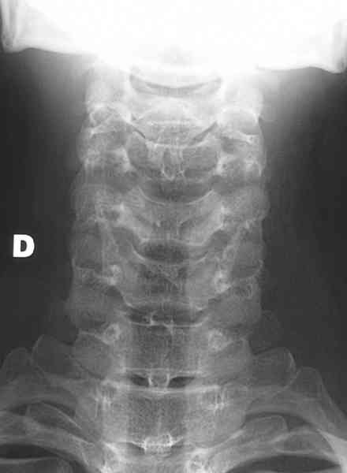 _344 Photo Radiographie normale du rachis cervical de face
-
De profil :
- lordose régulière et harmonieuse de C2 à C7
- alignement des corps vertébraux sur leur face antérieure et la plaque postérieure
- hauteur respectée et équivalente des disques inter vertébraux
- superposition parfaite des massifs articulaires
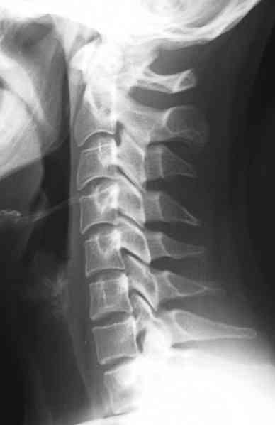 _345 Photo Radiographie normale du rachis cervical de profil
-
De 3/4 :
- alignement des corps vertébraux et des « tuiles » des zygapophyses
- diamètres harmonieux et réguliers des foramen intervertébraux
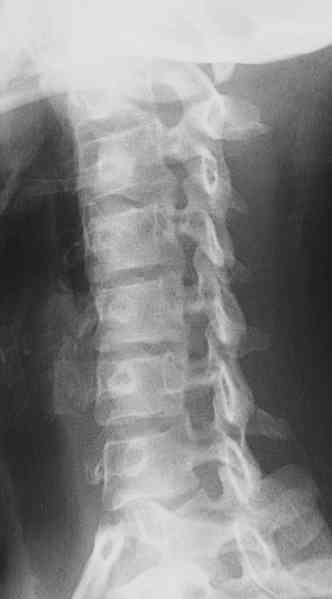 _346 Photo Radiographie normale du rachis cervical de 3/4
- Toute image douteuse ou pathologique doit être précisée et complétée par un scanner en fenêtre osseuse et parenchymateuse, avec des reconstructions frontales et sagittales, voire des reconstructions tridimensionnelles
PIEGES DE LA TRAUMATOLOGIE DU RACHIS CERVICAL
Rachis sous-occipital (C1 et C2)
-
Fracture de Jefferson :
- rupture de l'anneau de C1, avec une fracture sur l'arc antérieur et l'arc postérieur de C1, visible sur des radiographies de face, par un écartement anormal des masses latérales de C1
- le scanner en coupes axiales précise au mieux ces 2 traits de fractures
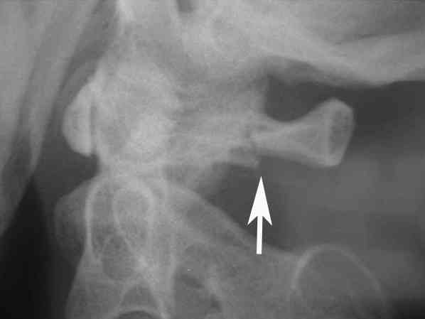 _349 Photo Fracture de Jefferson visible sur une incidence de profil du rachis cervical haut
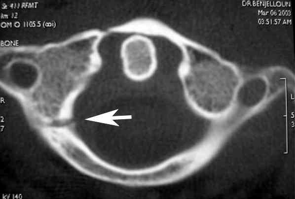 _350 Photo Fracture de Jefferson sur une coupe scanner au niveau de C1
-
Fractures de l'odontoïde de C2 :
- siègent généralement au col de l'odontoïde, le trait est horizontal ou oblique
- le classique cliché « bouche ouverte » pour voir l'odontoïde de face doit être remplacé par le scanner en reconstructions frontales et sagittales
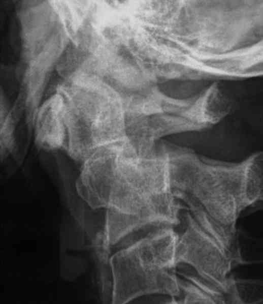 _351 Photo Fracture déplacée de l'odontoïde
-
Fractures « bi-pédiculaires » de C2 :
- ce sont en fait des fractures de l'isthme de C2, ou « Hangman's fracture »
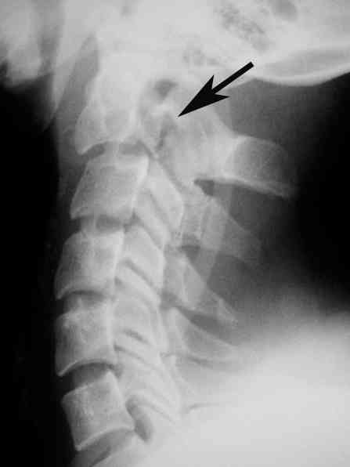 _352 Photo Fracture bipédiculaire de C2
Rachis cervical inférieur (C3 à C7)
-
Lésions disco-ligamentaires (75% des cas) :
-
entorses : représentent une rupture des moyens d'union entre 2 vertèbres, avec une instabilité immédiate et prolongée entre ces 2 vertèbres ; le diagnostic est radiologique sur des radios simples, avec une bascule vers l'avant du segment sus-jacent, mais surtout sur des radiographies dynamiques en flexion-extension, réalisées après quelques jours de traitement myorelaxant et anti-inflammatoire ; la laxité (importante) entre 2 vertèbres apparaît alors nettement, et ne doit pas être confondue avec une « charnière physiologique » du rachis cervical inférieur ; en effet, il existe chez chaque individu, un espace inter vertébral cervical qui est plus mobile que les autres, et qui varie en fonction de l'âge
- 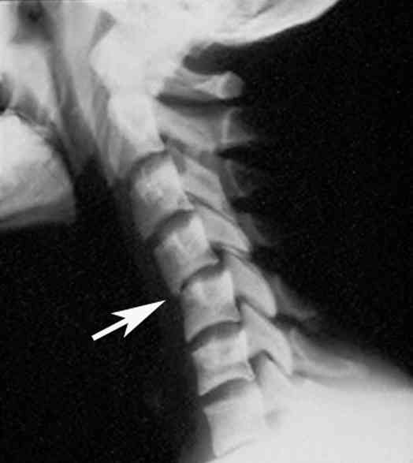 _353 Photo Entorse grave du rachis cervical au niveau C4-C5
-
luxations : avec « accrochage articulaire » uni ou bilatéral sont visibles sur les radios de profil mais surtout sur les incidences de 3/4 qui visualisent l'accrochage articulaire et le décalage des corps vertébraux
- 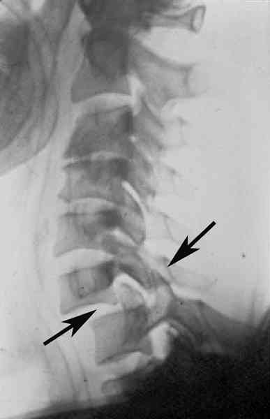 _354 Photo Luxation C6-C7 avec accrochage unilatéral
- fractures-luxations : la luxation articulaire est remplacée par une fracture du processus articulaire supérieur ou inférieur
-
entorses : représentent une rupture des moyens d'union entre 2 vertèbres, avec une instabilité immédiate et prolongée entre ces 2 vertèbres ; le diagnostic est radiologique sur des radios simples, avec une bascule vers l'avant du segment sus-jacent, mais surtout sur des radiographies dynamiques en flexion-extension, réalisées après quelques jours de traitement myorelaxant et anti-inflammatoire ; la laxité (importante) entre 2 vertèbres apparaît alors nettement, et ne doit pas être confondue avec une « charnière physiologique » du rachis cervical inférieur ; en effet, il existe chez chaque individu, un espace inter vertébral cervical qui est plus mobile que les autres, et qui varie en fonction de l'âge
-
Lésions disco-corporéales :
- elles sont rares au niveau cervical (5%)
- ce sont les tassements du corps vertébral, voire un éclatement du corps
- le diagnostic radiologique est évident
-
Lésions mixtes (20%) :
-
elles sont représentées par la « Tear-drop fracture », qui siège presque exclusivement en C5, suite à un plongeon en eau peu profonde ou à une chute sur le sommet du crâne
- 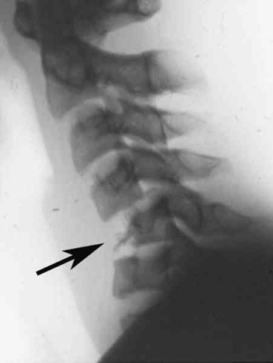 _355 Photo Tear drop fracture au niveau de C5
- cette fracture très instable, souvent génératrice de lésion de la moelle, associe une fracture corporéale sous forme d'un fragment antéro-inférieur, et une déchirure discale sus et/ou sous jacente
- le mouvement de flexion est très dangereux
-
elles sont représentées par la « Tear-drop fracture », qui siège presque exclusivement en C5, suite à un plongeon en eau peu profonde ou à une chute sur le sommet du crâne
La majorité de ces lésions est instable et menaçante pour la moelle. Le ramassage, l'examen clinique et radiologique doivent se faire en position neutre, le cou du blessé immobilisé par un collier cervical. Les manoeuvres de réduction doivent être faites en milieu spécialisé en préopératoire immédiat
-
Myélopathies arthrosiques décompensées :
- ce sont généralement des patients qui ont plus de 60 ans, porteurs d'une cervicarthrose sévère, responsable d'une contrainte sur la moelle cervicale, mais muette sur le plan clinique
- une chute banale ou un traumatisme modéré peut décompenser cette situation et provoquer une tétraplégie ou tétraparésie
- le transfert en milieu spécialisé s'impose
RADIOLOGIE DU RACHIS THORACO-LOMBAIRE NORMAL
Incidences de débrouillage : face et profil (suffisantes pour la totalité des diagnostics)
-
De face :
- l'axe vertical doit être rectiligne, avec
- une hauteur croissante des corps vertébraux dans le sens crânio-caudal
- un alignement et un écart régulier des pédicules des vertèbres
- un espacement régulier des processus épineux
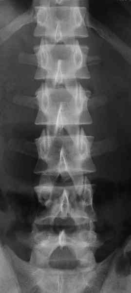 _347 Photo Radiographie normale du rachis lombaire de face
-
De profil :
- respect de la cyphose thoracique et de la lordose lombaire :
- forme rectangulaire des corps vertébraux
- hauteur respectée des disques intervertébraux
- respect du mur postérieur de chaque vertèbre
- écarts inter-épineux réguliers. Toute image pathologique doit être inventoriée par un scanner, en fenêtre osseuse et parenchymateuse, avec des reconstructions frontales et sagittales
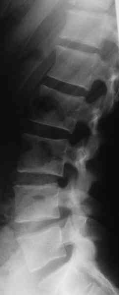 _348 Photo Radiographie normale du rachis lombaire de profil
PIEGES DE LA TRAUMATOLOGIE DU RACHIS THORACIQUE
Ce segment rachidien peu mobile fait l'objet de deux types de lésions
-
Tassements bénins de corps vertébraux :
- avec une perte de quelques degrés de la hauteur vertébrale
- l'arc postérieur est intact, le canal vertébral est respecté
-
Lésions mixtes :
- elles associent des tassements vertébraux plus importants, sur une ou plusieurs vertèbres et des fractures de l'arc postérieur qui contribuent à une instabilité progressive qui aggrave le déplacement en cyphose en quelques semaines
- ces lésions nécessitent un scanner, et la plupart du temps un avis spécialisé pour réaliser une ostéosynthèse postérieure sur plusieurs niveaux
Les lésions de la moelle thoracique sont souvent graves, sous forme d'une paraplégie complète et définitive.
La charnière cervico-thoracique et la colonne thoracique haute sont mal explorées sur des radiographies standard, en raison de la superposition avec la ceinture scapulaire : l'indication de scanner est donc fréquente.
PIEGES DE LA TRAUMATOLOGIE DU RACHIS LOMBAIRE
Ce segment mobile et porteur à la fois, est le plus souvent concerné par les traumatismes de la colonne vertébrale, en particulier en L1 (centre traumatique de Clavelin)
Lésions disco-corporéales
- Ce sont les plus fréquentes (76%)
- La gravité lésionnelle va suivre une démarche parfaitement reproductible selon la quantité d'énergie reçue par la vertèbre concernée
Lésions disco-ligamentaires
- Elles sont rares (6%), mais les luxations lombaires sont dangereuses sur le plan neurologique, instables et très douloureuses
- On constate une bascule antérieure d'une vertèbre par rapport à la vertèbre sous-jacente, avec un affrontement ou un accrochage articulaire
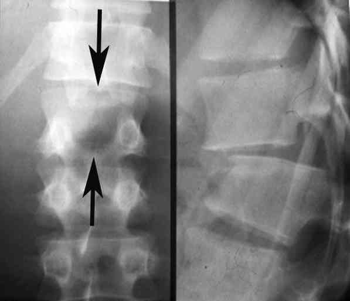 _358 Photo Luxation lombaire
Lésion mixtes
- Elles sont représentées par les fractures de Chance (18%)
- Elles associent un tassement corporéal et une fracture horizontale de l'arc postérieur, avec un trait de fracture qui passe par le processus épineux puis les zygapophyses et enfin les pédicules. C'est une véritable ouverture transversale par l'arrière de la vertèbre
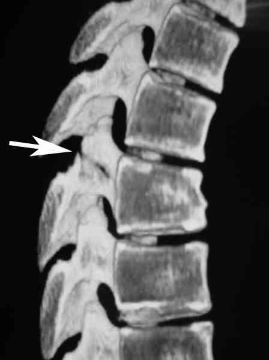 _359 Photo Fracture de Chance
IRM VERTEBRO-MEDULLAIRE
- Si un doute persiste quant à un déficit neurologique et sa relation avec une lésion vertébrale, l'IRM s'impose pour visualiser le canal vertébral et son contenu
- Examen difficile en urgence lié à la disponibilité du matériel et aux caractéristiques du patient
-
Indications de l'examen :
- déficit neurologique sans anomalie radiologique sur radios standards et TDM (SCIWORA : Spinal cord injury without radiographic abnormality) : hernie discale, hématome épidural, contusion médullaire
- déficit neurologique avec cervicarthrose et/ou canal cervical étroit sans lésion de nature traumatique
- contrôle des réductions par traction des fractures-luxations du rachis cervical
CAS PARTICULIER : TRAUMATISME PENETRANT DU RACHIS
- C'est l'imagerie qui reste l'examen de première intention
- Dans les traumatismes balistiques, les radiographies face et profil permettent de localiser le projectile et d'évaluer les lésions osseuses
- La TDM est très souvent artéfactée
-
L'IRM est contre-indiquée s'il s'agit de projectiles métalliques
Diagnostic étiologique
FRACTURES ISOLEES DU SACRUM
-
Elles sont, habituellement, consécutives à un choc postérieur direct
-
Le trait est horizontal et passe par le 3e ou le 4e trou sacré
-
Elles sont relativement fréquentes chez le sujet âgé ostéoporotique, mais peuvent également se voir chez le jeune à la suite d'une chute sur les fesses à partir d'un lieu élevé
-
Le diagnostic orienté par les radiographies est confirmé par le scanner
-
fractures du coccyx
-
Elles sont relativement rares et de diagnostic radiologique difficile (coccyx crochu ?)
CLASSIFICATION DES LESIONS TRAUMATIQUES DU RACHIS
On distingue 3 groupes lésionnels : les lésions disco-ligamentaires, les lésions disco-corporéales, et les lésions mixtes
-
Lésions disco-ligamentaires :
- elles résultent d'un traumatisme horizontal, en transsection vertébrale, c'est un véritable cisaillement vertébral
- ce sont les entorses, les luxations et les fractures-luxations : il en résulte une déchirure du disque et des ligaments entre deux vertèbres, plus ou moins des arrachements osseux
- ces éléments ne cicatrisent pas spontanément : il y a donc une instabilité vertébrale « horizontale » immédiate et durable
- les lésions disco-ligamentaires sont les plus fréquentes au niveau cervical (75%), elles sont plus rares au niveau lombaire (6%)
-
Lésions disco-corporéales :
- elles résultent d'un traumatisme par hyperpression axiale
- c'est un écrasement vertébral par le disque qui s'enfonce dans le corps vertébral sous-jacent, et provoque un éclatement de la vertèbre plus ou moins complet selon la quantité d'énergie reçue sur le foyer traumatique
- l'instabilité est donc verticale et altère la statique vertébrale
- les lésions disco-corporéales regroupent les fractures marginales antérieures, les tassements corporéaux, les fractures comminutives : « burst fracture » des anglo-saxons
- elles sont fréquentes au niveau lombaire (76%), plus rares au niveau cervical
-
Lésions mixtes :
- elles associent les 2 facteurs physiopathologiques précédents, et donc les 2 modes d'instabilité
- ce sont les « tear-drop fractures » du rachis cervical et les fractures de Chance du niveau lombaire
- par sa faible mobilité, la colonne thoracique est souvent le siège de lésions de type mixte
Traitement
TRAITEMENT PREHOSPITALIER / INTRAHOSPITALIER
Traitement préhospitalier
-
Immobilisation du blessé :
- position de Haines modifiée (permet une meilleure rectitude du rachis que la PLS)
- collier cervical et matelas à dépression
- alignement sans traction
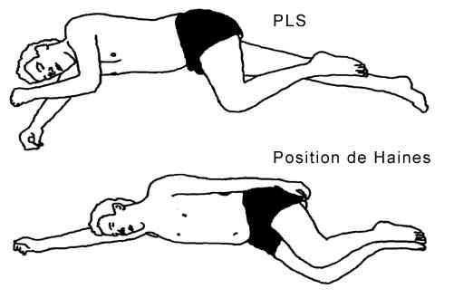 _360 Position de Haines comparée à la position latérale de sécurité classique
-
Réanimation respiratoire :
- intubation trachéale sous anesthésie avec curarisation par succinylcholine
- alignement manuel du rachis
- pas de compression trans-cricoïdienne = pas de manoeuvre de Sellick
-
Réanimation cardiovasculaire adaptée à l'objectif de pression artérielle :
-
objectif hémodynamique :
- l'HoTA (PAS < 90 mmHg) doit être évitée ou corrigée aussi rapidement que possible
- la PAM doit être maintenue égale ou supérieure à 85 mmHg dès la prise en charge extrahospitalière et au cours de la 1ère semaine post-traumatique
- le monitorage de la PA doit être fiable en toutes circonstances pour dépister précocement une HoTA et guider son traitement
- un cathétérisme artériel est nécessaire le plus tôt possible au cours de la prise en charge médicale
-
objectif hémodynamique :
-
Traitement hémodynamique :
- le remplissage vasculaire est le premier moyen utilisable pour traiter l'HoTA. Les solutés ne doivent pas être hypotoniques. La perfusion d'un soluté colloïde de synthèse est recommandée en cas d'HoTA
- un vasopresseur (sympathomimétique direct type Noradrénaline en IVSE 24 mg dans 48 mL, 1mg/h soit vitesse 2 au départ sur voie veineuse dédiée) est utilisable en complément du remplissage vasculaire
- une élévation excessive de la PA doit être évitée pour ne pas favoriser l'oedème et/ou l'hémorragie médullaire et ne pas majorer la spoliation sanguine en cas de lésion vasculaire
-
Médulloprotection :
- aucune indication de méthylprednisolone à posologie anti-radicalaire
Traitement intrahospitalier
- Mise en place d'une sonde urinaire à demeure si déficit neurologique
- Protection des points d'appui en prévention des escarres
- Laisser à jeun en vue d'une chirurgie précoce et parce que iléus digestif paralytique très souvent présent
Traitement chirurgical et orthopédique fonction du niveau rachidien et du type de lésion
-
Rachis sous-occipital, (C1 et C2) :
-
fracture de Jefferson :
- c'est une lésion stable, qui consolide toujours par un traitement orthopédique (minerve)
-
fractures de l'odontoïde de C2 :
- ce sont des fractures instables, qui nécessitent une fixation chirurgicale
-
fractures « bi-pédiculaires » de C2 :
- elles sont stables et consolident par une immobilisation par minerve si le disque C2-C3 est sain
- par contre en cas de décalage C2-C3 sur le profil, le traitement doit être chirurgical avec arthrodèse C2-C3
-
fracture de Jefferson :
-
Rachis cervical inférieur (C3 à C7) :
-
lésions disco-ligamentaires (75% des cas) :
- entorses : traitement myorelaxant et anti-inflammatoire
- luxations : avec « accrochage articulaire » uni ou bilatéral sont visibles sur les radios de profil mais surtout sur les incidences de 3/4 qui visualisent l'accrochage articulaire et le décalage des corps vertébraux
- fractures-luxations : la luxation articulaire est remplacée par une fracture du processus articulaire supérieur ou inférieur. Dans tous les cas, le traitement est chirurgical avec une arthrodèse à la place du disque déchiré, après réduction par manoeuvres externes sous anesthésie et contrôle sous amplificateur de brillance
-
lésions disco-corporéales :
- le traitement chirurgical est souvent nécessaire sous forme d'une corporectomie suivie d'une greffe-arthrodèse pour restituer la statique de la colonne
-
lésions mixtes (20%) :
- le traitement est chirurgical avec arthrodèse plus ou moins corporectomie
- NB : la majorité de ces lésions est instable et menaçante pour la moelle. Le ramassage, l'examen clinique et radiologique doivent se faire en position neutre, le cou du blessé immobilisé par un collier cervical. Les manoeuvres de réduction doivent être faites en milieu spécialisé en préopératoire immédiat
-
myélopathies arthrosiques décompensées :
- le transfert en milieu spécialisé s'impose
-
lésions disco-ligamentaires (75% des cas) :
-
Rachis thoracique :
-
tassements bénins de corps vertébraux :
- le traitement est orthopédique avec corset et kinésithérapie pour maintenir la musculature paravertébrale
-
lésions mixtes :
- les lésions nécessitent un avis spécialisé pour réaliser une ostéosynthèse postérieure sur plusieurs niveaux
-
tassements bénins de corps vertébraux :
-
Rachis lombaire :
-
lésions disco-corporéales :
- les fractures marginales antérieures sont les plus bénignes, la statique vertébrale n'est pas modifiée et un traitement fonctionnel suffit
- les tassements corporéaux qui épargnent la plaque postérieure, donc sans sténose du canal vertébral peuvent être traités par méthode orthopédique ou par ostéosynthèse selon le degré d'angulation, l'âge et le potentiel physique du sujet et les habitudes du chirurgien
- la présence d'un fragment corporéal postéro-supérieur qui sténose le canal vertébral est une menace neurologique qui nécessite presque toujours une ostéosynthèse
- l'éclatement du corps vertébral et de l'arc postérieur est obligatoirement réduit et fixé par une ostéosynthèse
-
lésions disco-ligamentaires :
- le traitement est exclusivement chirurgical, avec une réduction instrumentale à ciel ouvert, et une ostéosynthèse dans le même temps opératoire
-
lésions mixtes :
- le traitement est encore chirurgical avec ostéosynthèse postérieure
-
lésions disco-corporéales :
-
Fractures isolées du sacrum :
- dans la plupart des cas, la fracture est peu déplacée si bien que le traitement consistera en un décubitus simple pendant 3 semaines environ
- en cas de déplacement important (bascule vers l'avant du fragment distal), il peut exister des troubles neurologiques (d'où l'intérêt d'un examen neurologique détaillé) pouvant conduire à une réduction par manoeuvres externes et toucher rectal
- en cas d'irréductibilité ou de persistance des troubles neurologiques, un abord chirurgical à visée décompresssive peut être indiqué
-
Fractures du coccyx :
- elles se traitent par le repos (bouée pour s'asseoir) et éventuellement par des infiltrations locales
- cependant, les coccygodynies secondaires ne sont pas rares et surviennent, en général, sur un terrain prédisposé
Traitement chirurgical
-
Aspect chirurgical :
-
objectifs :
- réduction du déplacement des structures
- décompression des éléments du canal spinal
- hémostase régionale
- stabilisation définitive des lésions osseuses
-
délai opératoire :
- lésion extra-rachidienne engageant le pronostic vital : traitement dans un établissement de proximité avant transfert dans l'établissement de référence
- intervention « en urgence » (délai < 8 h) si souffrance médullaire incomplète ou souffrance radiculaire
- intervention peut-être « différée » (délai < 48 h) si souffrance médullaire
-
objectifs :
-
Aspect médical :
-
critères d'opérabilité :
- traitement efficace des lésions mettant en jeu le pronostic vital au travers d'une hémorragie ou d'une HTIC et des lésions entravant le positionnement du patient
- stabilité cardiorespiratoire
- normothermie
- normalité de l'hémostase biologique
- contrôle de la pression intracrânienne
-
critères d'opérabilité :
Suivi du traitement
-
Prévention de la maladie thromboembolique :
- prévalence élevée de la thrombose veineuse et de l'embolie pulmonaire chez les blessés médullaires. Risque classique à partir de H72 post-trauma
-
prévention non-pharmacologique immédiate :
- hémodilution normovolémique
- bas de contention
- compression pneumatique intermittente des mollets ou de la plante des pieds
- prévention pharmacologique précoce en l'absence de saignement évolutif
Surveillance
-
Scope
-
Examen neurologique répété
-
PNI. Discuter cathéter artériel si trajet long
-
FC
-
SpO2
-
ETCO2 si intubation - ventilation
Devenir / orientation
ORIENTATION VERS UN CENTRE HOSPITALIER AVEC EQUIPE SPECIALISEE
-
La décompression précoce améliore l'évolution neurologique des patients présentant un déficit neurologique incomplet
Devenir / orientation
ORIENTATION VERS UN CENTRE HOSPITALIER AVEC EQUIPE SPECIALISEE
- La décompression précoce améliore l'évolution neurologique des patients présentant un déficit neurologique incomplet
Intérêt du centre de référence
- Les complications sont plus fréquentes chez les patients opérés en dehors du centre de référence
- Réduction significative de la durée d'hospitalisation en réanimation et de la durée totale d'hospitalisation chez les patients traités
- Plus le transfert est tardif, plus l'incidence des escarres est grande
Traumatismes du rachis et de la moelle épinière
-
Choix du vecteur :
- hélicoptère chaque fois que possible. Confort et rapidité
-
Accueil hospitalier :
- envisager la suppression des étapes intermédiaires, acheminement direct sur le centre de référence si diagnostic évoqué sur les lieux et pas de lésions associées menaçant le pronostic vital
Prise en charge préhospitalière
-
Chaîne complète qui s'étend de la régulation de l'appel à l'accueil dont le but est :
- protection de la moelle épinière par immobilisation rigoureuse de l'axe tête-cou-tronc
- préservation de la ventilation
- respect de la pression de perfusion
- Régulation de l'accueil permettant une intervention chirurgicale précoce
Réanimation si lésion médullaire
Algorithme
-
Stratégie d’exploration radiologique initiale des traumatismes du rachis cervical
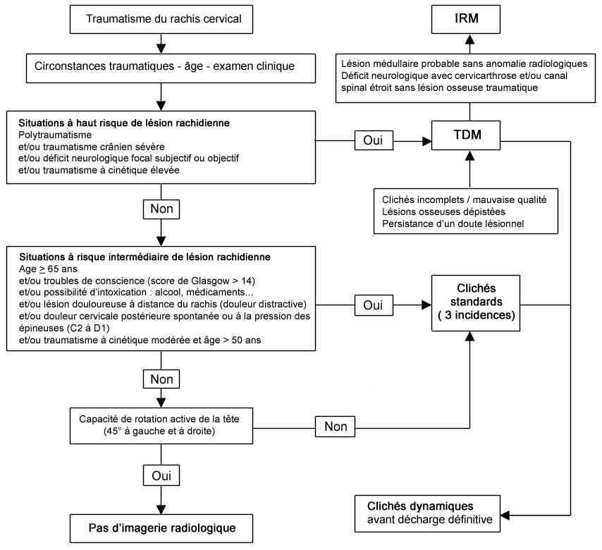 _770 Algorithme Stratégie d'exploration radiologique initiale des traumatismes du rachis cervical
Bibliographie
-
Conférence d'Experts SFAR (en collaboration avec l'Association de Neuro-Anesthésie Réanimation de Langue Française, SAMU de France, la Société Française de Chirurgie Orthopédique et Traumatologique, la Société Francophone de Médecine d'Urgence, la Société Française de Médecine Physique et de Réadaptation, la Société Française de Neurochirurgie, la Société Francophone de Neurochirurgie du Rachis, la Société de Pneumologie de Langue Française) : « Prise en charge d'un blessé adulte présentant un traumatisme vertébro-médullaire ». Ann Fr Anesth Réanim 2004, 23, 930-45
-
Robert O, Savry C, Freysz M. Stratégie diagnostique des lésions traumatiques du rachis cervical. Réanimation 2004, 13, 471-476
-
Traumatologie à l'usage de l'urgentiste. Sous la direction de Dominique Saragaglia. Editions Sauramps Médical. 2004
Auteur(s) : Marc FREYSZ, Abdelouaïd NADJI, Dominique SARAGAGLIA